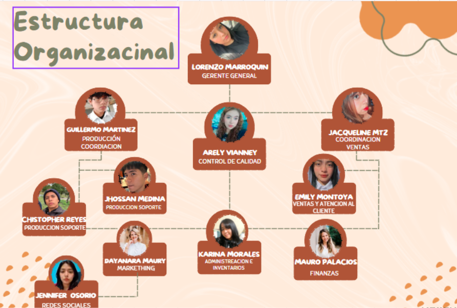

Estructura Organizacional
Importancia de nuestra estructura
Para un emprendimiento comercial dinámico como Crazy Pop, la estructura organizacional es el motor que asegura que cada paleta preparada y cada manzana con chamoy mantenga los más altos estándares de calidad y sabor de manera constante.
Establecer roles claros permite delimitar las responsabilidades críticas: desde la meticulosa selección y preparación de la materia prima, pasando por el riguroso control higiénico, hasta la atención rápida al cliente y la administración estratégica de los recursos financieros. Esto garantiza un flujo operativo ágil y sin contratiempos durante las horas pico de venta en el plantel.
Dirección y Control
- Lorenzo Marroquin: Gerente General (Líder del proyecto).
- Arely Vianney: Control de Calidad (Monitoreo de estándares).
⚙️ Producción y Soporte
- Guillermo Martinez: Producción Coordinacion.
- Chistopher Reyes: Produccion Soporte.
- Jhossan Medina: Produccion Soporte.
Ventas y Logística
- Jacqueline Mtz: Coordinacion Ventas.
- Emily Montoya: Ventas y Atencion al Cliente.
Estrategia y Finanzas
- Dayanara Maury: Markething y Redes Sociales.
- Jennifer Osorio: Redes Sociales.
- Karina Morales: Administreacion e Inventarios.
- Mauro Palacios: Finanzas.
Mapa de Roles de Crazy Pop
